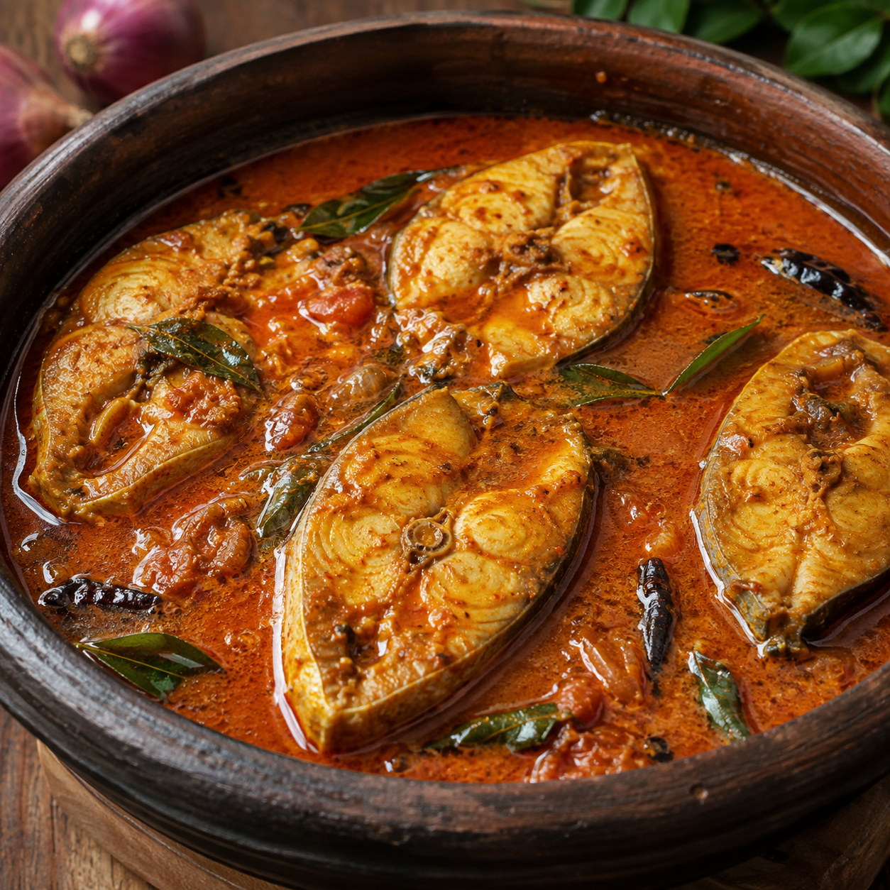
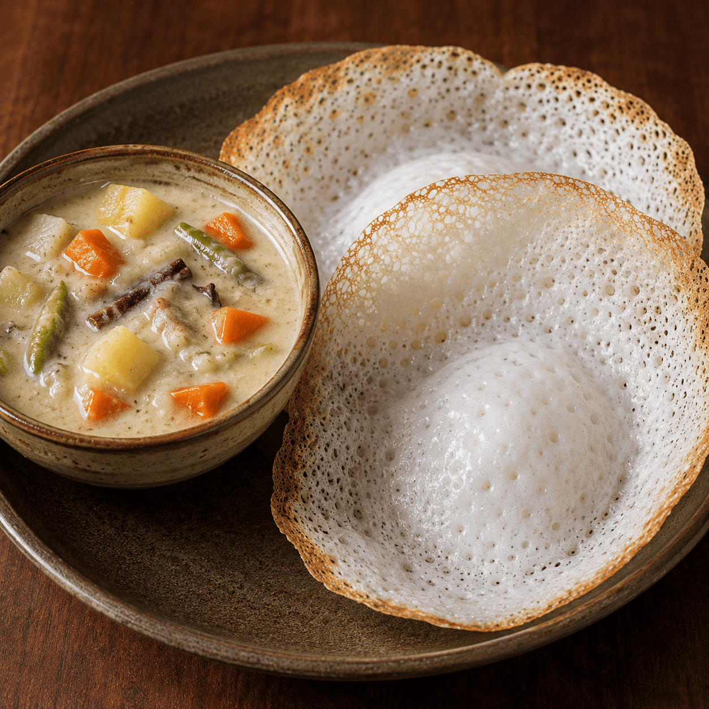
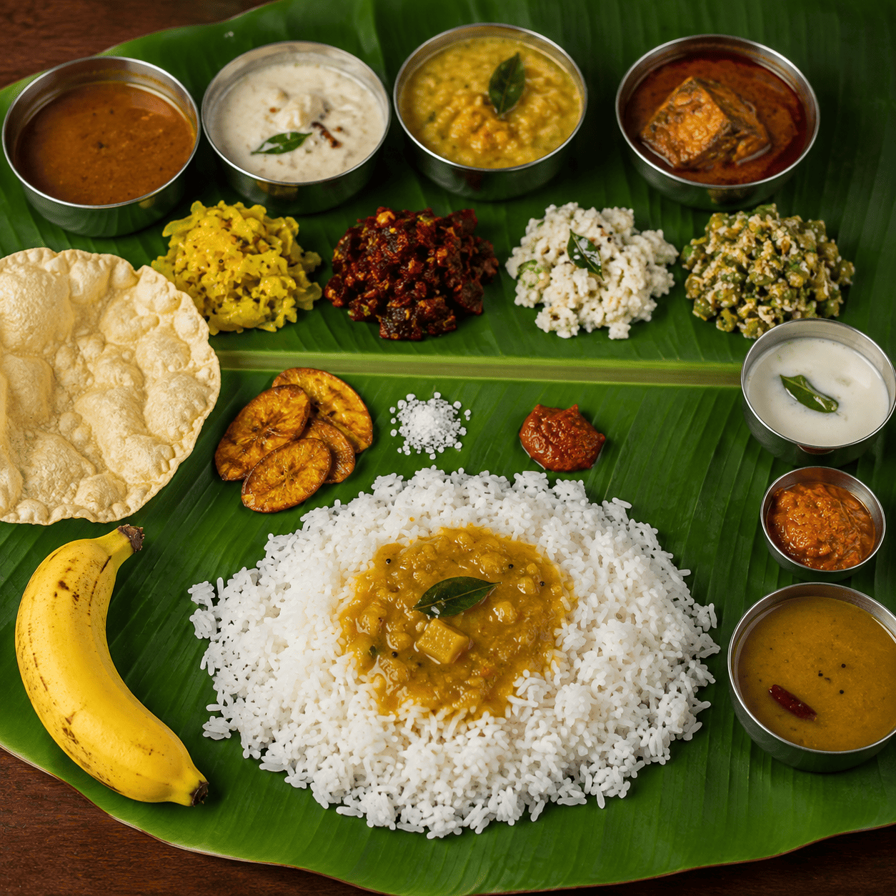
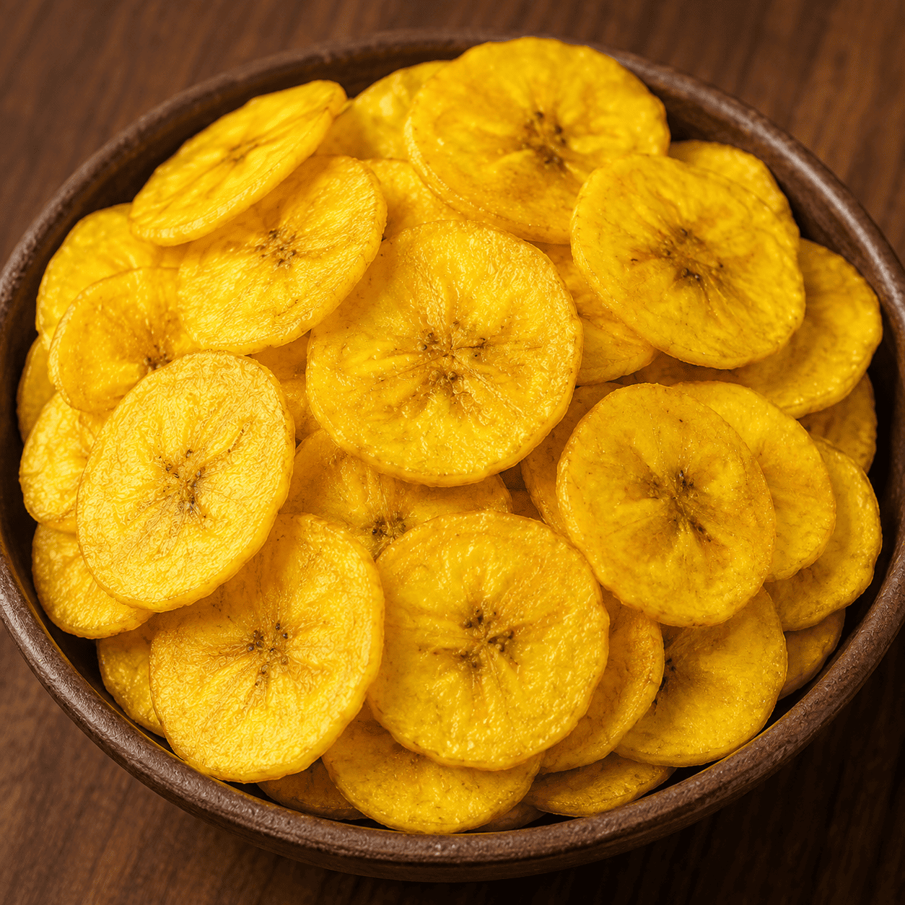
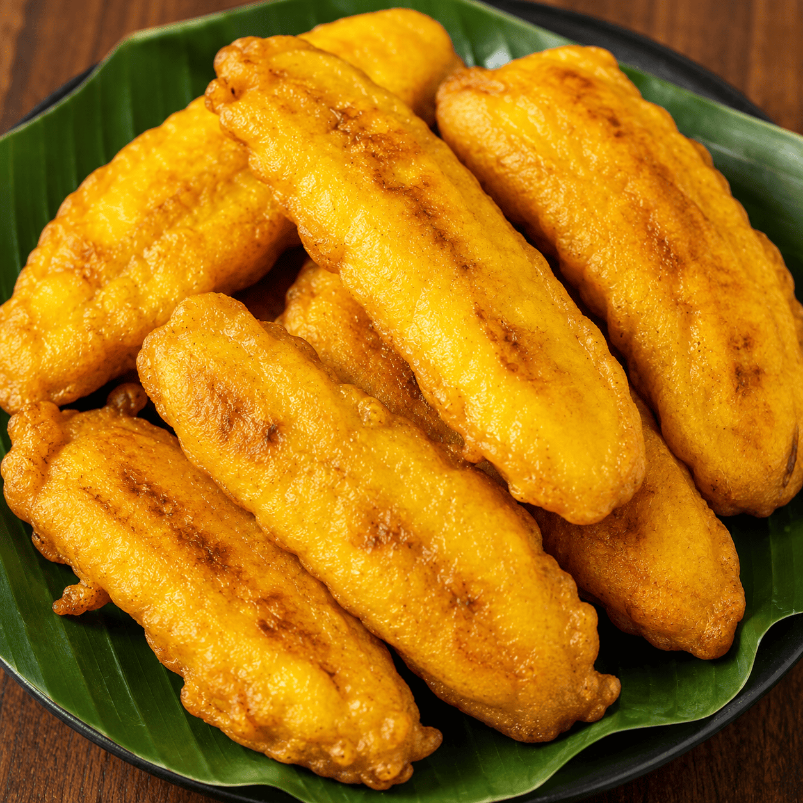

KANYAKUMARI FOOD GUIDE
Updated: August 2026
Kanyakumari is famous not only for its beautiful beaches, sunrise and historical landmarks but also for its delicious food. The local cuisine is influenced by Tamil and Kerala cooking traditions.
From fresh seafood to traditional South Indian breakfasts and popular local snacks, visitors can enjoy a variety of flavours while exploring Kanyakumari.

1. Kanyakumari Fish Curry
Fresh seafood is an important part of the food culture in coastal Kanyakumari. Traditional fish curry is commonly prepared with local spices and ingredients that give it a rich flavour.
Fish curry is usually enjoyed with rice and is a popular choice for visitors who want to experience the flavours of the coastal region.

2. Appam with Stew
Appam is a soft and light South Indian dish with a crispy edge and soft centre. It is commonly served with vegetable stew or other traditional side dishes.
The combination of appam and stew is especially popular in the southern region and is a great choice for breakfast or dinner.

3. Traditional Nagercoil Style Meals
A traditional South Indian meal offers a variety of dishes served with rice. Depending on the restaurant and local style, the meal may include vegetables, sambar, rasam and other side dishes.
This is a good option for visitors who want to experience a traditional regional lunch.

4. Banana Chips
Banana chips are a popular snack in southern India and are commonly enjoyed by travellers visiting the region.
They are made using sliced bananas and are often available in local shops. They can also be a convenient snack to carry while travelling.

5. Pazham Pori
Pazham Pori is a popular banana snack made by coating ripe banana slices and frying them until golden.
It is usually enjoyed as a tea-time snack and is known for its sweet and soft texture.
Food Tips for Visitors to Kanyakumari
- Try local restaurants and traditional food shops.
- Ask about freshly prepared seafood.
- Try traditional South Indian breakfast dishes.
- Choose clean and busy restaurants.
- Explore local snacks while travelling.
Looking for a Comfortable Stay in Kanyakumari?
Stay at Mars Residency and enjoy easy access to Kanyakumari's tourist places, restaurants and local food experiences.